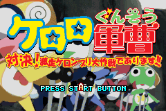
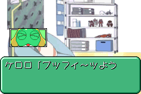

Keroro Gunsou - Taiketsu! Gekisou Keronprix Daisakusen de Arimasu!! (Japan)
Stateless / Passcode 💾 MultiBoot 🎮 4P Link 📡 Wireless
Cartridge Identity
- Game Code
BKJJ(FamilyBKJ)- Header Title
KRRCART_AGB- Maker / Revision
BN/ rev0- ROM Size
- 4.0 MiB (4,194,304 B)
- Save Media
None / Unknown- SHA-256
baf7eb66f3d352108091a03bd38ce0d2f13ab334d59f3bfe1cd9bf456b8f6971
Screenshots


Niche & Rare Accessories
Detected niche/rare GBA accessory support: 🔌 Wireless Adapter (RFU_V1014).
Full 343-ROM corpus breakdown in the Cartridge Hardware & Niche Accessories Reference · auto-detected from ROM bytes via
gbakit inspect.
- Wireless Adapter (RFU_V1014)
- Nintendo Wireless Adapter (
AGB-015) SDKRFU_V1014+RFU-MBOOT
Link Cable & Multiplayer Communications
This title contains detected communication capabilities: 💾 MultiBoot 🎮 4P Link 📡 Wireless.
Detailed protocol specifications, SIO registers, Joybus commands, and MultiBoot sequences are documented in the Link & Multiplayer Reference.
- Multi-Player SIO (4P)
- 16-bit ring network · SIOCNT (
0x04000128) literals:0x0387d0,0x0389bc,0x0389f4· SIODATA32/SIOMULTI0 (0x04000120) literals:0x0387c4,0x038888,0x038ab4 - Nintendo Wireless Adapter
- AGB-015 RFU driver signature
RFU-MBOOTat offset0x2fd934 - Nintendo Wireless Adapter
- AGB-015 RFU driver signature
NINTENDOSio32IDat offset0x2fd940 - Single-Cart MultiBoot
- Single-Cartridge MultiBoot (Download Play) client/server handler · Thumb SWI 0x25 (
0xDF25):0x123948,0x155204,0x27699a,0x288c2a· SDK signatures:MBOOTat0x2fd938
Cartridge Storage Architecture: Stateless / Passcode
Zero non-volatile battery hardware: This cartridge PCB contains ROM only (no SRAM, Flash, or EEPROM chips). Progression is preserved via on-screen passcodes or session-only gameplay. No
.sav file is generated or required.
Text, Fonts & Scene Data
- Primary Text Encoding
- LZ77-compressed ASCII (
10ASCII strings ·200Shift-JIS runs ·1LZ77 ASCII blocks) - Font & VWF Indicators
- VWF Width Table 1bpp Font · BIOS SWIs: BitUnPack
0x10:11· LZ770x11/12:22· Huffman0x13:4· RLE0x14/15:8 - Scene & Packaging
22ROM pointer tables (≥32 entries,1≥200) ·218relativeu32TOCs ·197OAM metasprite hits